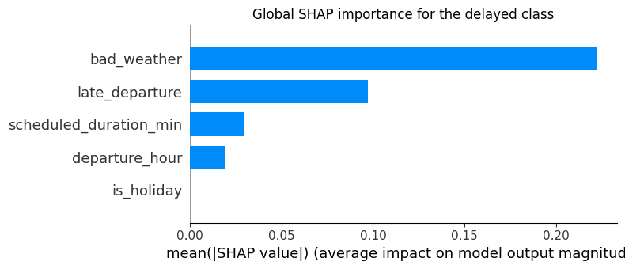
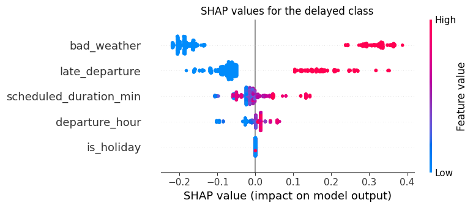
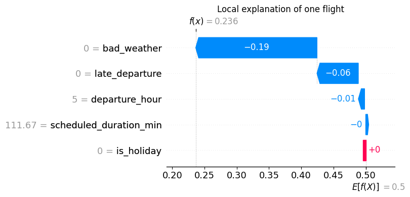
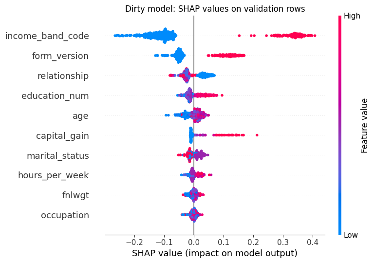
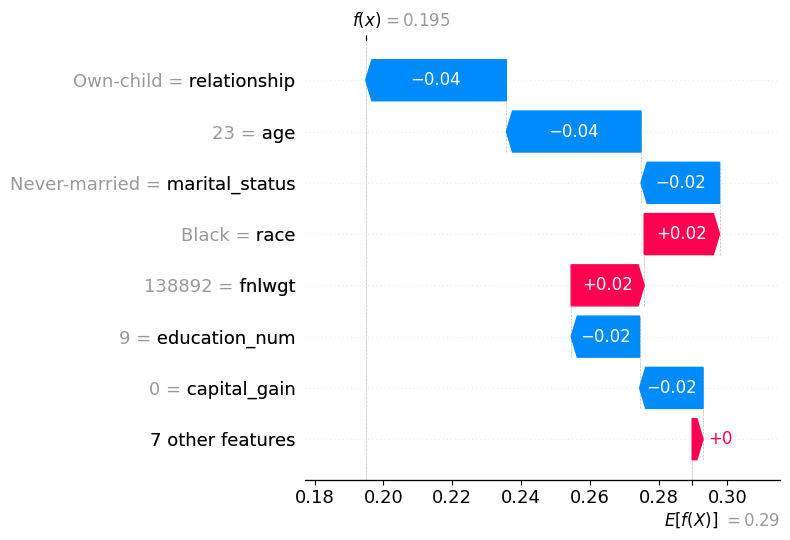
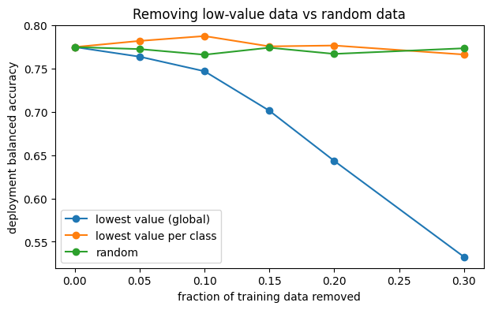

WARNING: Running pip as the 'root' user can result in broken permissions and conflicting behaviour with the system package manager, possibly rendering your system unusable. It is recommended to use a virtual environment instead: https://pip.pypa.io/warnings/venv. Use the --root-user-action option if you know what you are doing and want to suppress this warning. [notice] A new release of pip is available: 26.0.1 -> 26.2.1 [notice] To update, run: pip install --upgrade pip Note: you may need to restart the kernel to use updated packages.
Explainability for Data-Centric AI
Data-Centric AI (Module II)
Matteo Francia
DISI — University of Bologna
m.francia@unibo.it
DISI — University of Bologna
m.francia@unibo.it

Learning outcomes
By the end of this 3-hour lab, you should be able to:
- Explain the SHAP baseline, the value function \(v(S)\), and feature contributions.
- Compute exact Shapley values by brute force and check them against the
shaplibrary. - Interpret global and local SHAP results, and compare SHAP with permutation importance.
- Use explanations to detect leakage, shortcuts, and proxies in a real dataset.
- Detect label errors with out-of-fold predictions and inspect them with local explanations.
- Value training data with KNN-Shapley and test the value by removing data.
- Generate simple counterfactual explanations and spot proxy-based recourse.
Lab plan
| Time | Part |
|---|---|
| 0:00-0:50 | Part A: SHAP from first principles on a small flight-delay model |
| 0:50-1:30 | Part B: a dirty Adult Income dataset; find leakage and shortcuts with explanations |
| 1:30-1:40 | Break |
| 1:40-2:10 | Part C: label errors |
| 2:10-2:40 | Part D: data valuation with KNN-Shapley |
| 2:40-2:55 | Part E: counterfactuals and proxies |
| 2:55-3:00 | Data bug report |
The theory is in the slides Explainable AI for Data-Centric AI (Lundberg and Lee 2017; Molnar 2022).
Part A: SHAP from first principles
1. Global and local explanations
Model explainability answers two related questions:
- Global explanation: which features does the fitted model rely on across many predictions?
- Local explanation: which feature values moved one prediction away from the model’s baseline?
SHAP connects these views by calculating a contribution for every feature and every observation.
2. A fitted flight-delay model
The example uses a decision tree trained on five synthetic flight features. The model remains fixed throughout the SHAP analysis.
The synthetic data keeps the example reproducible. The SHAP procedure is the same for a tree trained on real flight data.
| metric | value | |
|---|---|---|
| 0 | balanced accuracy | 0.755526 |
| 1 | F1 | 0.664865 |
3. SHAP values
SHAP explains how a fixed, already-trained model produced a prediction.
For one observation, SHAP divides the difference between the model’s baseline output and its prediction among the features:
\[f(x) = E[f(X)] + \phi_1 + \phi_2 + \cdots + \phi_p\]
- \(E[f(X)]\) is the baseline, the model’s expected output for the reference population.
- \(\phi_j\) is the contribution assigned to feature \(j\) for this observation.
- Positive contributions increase the output. Negative contributions decrease it.
SHAP explains the model’s behavior. A large contribution does not prove that the feature caused the outcome.
4. The SHAP baseline
Choose a representative reference dataset, ask the model to predict every row, and average those outputs:
\[E[f(X)] \approx \frac{1}{n}\sum_{i=1}^{n}f(x_i)\]
| Reference flight | Predicted delay probability |
|---|---|
| A | 0.10 |
| B | 0.20 |
| C | 0.30 |
| D | 0.60 |
The baseline is \((0.10 + 0.20 + 0.30 + 0.60)/4 = 0.30\). SHAP starts every explanation from this model output.
The baseline is the average prediction, not the observed delay rate. The two may differ when the model is not perfectly calibrated.
5. Known and unknown features
SHAP reveals the feature values of the observation being explained one group at a time.
- A known feature is fixed to this observation’s value.
- An unknown feature is averaged out using the reference distribution. SHAP does not replace it with zero.
Consider a flight with bad weather and a late departure:
| Information revealed | Expected model output |
|---|---|
| Nothing about this flight | \(v(\varnothing)=0.30\) |
| Bad weather only | \(v(W)=0.50\) |
| Late departure only | \(v(L)=0.40\) |
| Both feature values | \(v(W,L)=0.70\) |
\(v(S)\) is the expected model output when the features in set \(S\) are fixed and the remaining features are averaged out.
6. Computing a SHAP contribution
A feature’s effect can depend on which other features are already known. SHAP therefore averages its marginal contribution across the possible feature orders.
For weather:
\[W \text{ first}: \quad v(W)-v(\varnothing)=0.50-0.30=0.20\]
\[W \text{ after }L: \quad v(W,L)-v(L)=0.70-0.40=0.30\]
\[\phi_W = \frac{0.20+0.30}{2}=0.25\]
Similarly, \(\phi_L=0.15\). The contributions reconstruct the prediction:
\[0.70 = 0.30 + 0.25 + 0.15\]
7. All feature contexts
For feature \(j\), exact Shapley values consider every subset \(S\) that does not contain \(j\):
\[\phi_j = \sum_{S \subseteq N \setminus \{j\}} \frac{|S|!(M-|S|-1)!}{M!} \left[v(S \cup \{j\})-v(S)\right]\]
The bracketed term measures what changes when feature \(j\) becomes known in context \(S\). The weight treats every possible feature order equally.
With \(M\) features, each feature has \(2^{M-1}\) possible subsets of the other features. For 10 features this is 512 subsets per feature. For 20 features it is 524,288. Direct enumeration quickly becomes impractical.
8. Exact Shapley values by brute force
With only five features we can enumerate all \(2^5 = 32\) coalitions. We use the interventional value function: features in \(S\) are fixed to the explained flight, the others are taken from each background flight, and predictions are averaged:
\[v_x(S) = \frac{1}{|B|}\sum_{z \in B} f(x_S, z_{\bar S})\]
Then we apply the Shapley formula directly.
Code
background = X_train.sample(100, random_state=RANDOM_STATE)
x_explain = X_test.iloc[0]
features = list(X.columns)
M = len(features)
def predict_delay(frame):
frame = frame if isinstance(frame, pd.DataFrame) else pd.DataFrame(frame, columns=features)
return tree.predict_proba(frame[features])[:, 1]
def value(coalition):
"""Expected prediction when the features in `coalition` are known."""
hybrid = background.copy()
for feature in coalition:
hybrid[feature] = x_explain[feature]
return predict_delay(hybrid).mean()
v = {frozenset(s): value(s) for k in range(M + 1) for s in combinations(features, k)}
exact_phi = {}
for j in features:
others = [f for f in features if f != j]
exact_phi[j] = sum(
factorial(len(s)) * factorial(M - len(s) - 1) / factorial(M)
* (v[frozenset(s) | {j}] - v[frozenset(s)])
for k in range(M) for s in combinations(others, k)
)
print(f"coalitions evaluated: {len(v)}")
print(f"baseline v(empty) = {v[frozenset()]:.4f}")
print(f"prediction f(x) = {predict_delay(x_explain.to_frame().T)[0]:.4f}")
print(f"baseline + sum(phi) = {v[frozenset()] + sum(exact_phi.values()):.4f} (efficiency)")
pd.Series(exact_phi, name="exact_phi").round(4)coalitions evaluated: 32
baseline v(empty) = 0.4357
prediction f(x) = 0.2363
baseline + sum(phi) = 0.2363 (efficiency)bad_weather -0.1166
late_departure -0.0739
departure_hour -0.0070
is_holiday 0.0000
scheduled_duration_min -0.0020
Name: exact_phi, dtype: float649. The library gives the same numbers
TreeExplainer with the same background data and feature_perturbation="interventional" computes the same game exactly, using the tree structure instead of enumeration (Lundberg et al. 2020). Model-agnostic explainers estimate it from samples (Štrumbelj and Kononenko 2014).
Code
import shap
tree_explainer = shap.TreeExplainer(tree, data=background, feature_perturbation="interventional",
model_output="probability")
tree_phi = np.asarray(tree_explainer.shap_values(x_explain.to_frame().T))
tree_phi = tree_phi[..., 1].ravel() if tree_phi.ndim == 3 else tree_phi.ravel()
permutation_explainer = shap.PermutationExplainer(predict_delay, background)
perm_phi = permutation_explainer(x_explain.to_frame().T, max_evals=200).values.ravel()
kernel_explainer = shap.KernelExplainer(predict_delay, background)
kernel_phi = np.asarray(kernel_explainer.shap_values(x_explain.to_frame().T, nsamples=64, silent=True)).ravel()
pd.DataFrame({
"brute force": pd.Series(exact_phi),
"TreeSHAP (interventional)": tree_phi,
"PermutationExplainer": perm_phi,
"KernelSHAP": kernel_phi,
}, index=features).round(4)| brute force | TreeSHAP (interventional) | PermutationExplainer | KernelSHAP | |
|---|---|---|---|---|
| bad_weather | -0.1166 | -0.1166 | -0.1204 | -0.1166 |
| late_departure | -0.0739 | -0.0739 | -0.0725 | -0.0739 |
| departure_hour | -0.0070 | -0.0070 | -0.0070 | -0.0070 |
| is_holiday | 0.0000 | 0.0000 | 0.0000 | 0.0000 |
| scheduled_duration_min | -0.0020 | -0.0020 | 0.0004 | -0.0020 |
Checkpoint: Shapley computations
- Why do brute force and TreeSHAP agree exactly, while the sampling explainers may differ slightly?
- Replace
backgroundwith 100 flights that all had bad weather. How do the baseline and \(\phi_{\text{bad weather}}\) change? Why? - How many coalitions would brute force need for the 14 features of Adult Income?
10. How the SHAP library performs the calculation
SHAP normally keeps the fitted model fixed. It does not retrain one model for every feature subset.
TreeExplaineruses the fitted tree’s paths and stored sample counts to calculate contributions efficiently.LinearExplaineruses the fitted coefficients and the background feature distribution.KernelExplainerandPermutationExplainerapproximate the result by evaluating selected coalitions or feature orders with the existing prediction function.
This differs from wrapper selection such as SFS. SFS repeatedly retrains models to choose features. SHAP explains predictions from one fitted model.
The reference data still matters: changing the background population can change the baseline and the SHAP contributions.
11. Global SHAP importance
A local SHAP value explains one prediction. Global importance averages the absolute local contributions over many observations:
\[I_j = \frac{1}{n}\sum_{i=1}^{n}|\phi_{ij}|\]
Absolute values prevent positive and negative effects from cancelling. The result measures how strongly the fitted model uses each feature on average.
SHAP baseline for the delayed class: 0.500| feature | mean_abs_shap | |
|---|---|---|
| 0 | bad_weather | 0.222251 |
| 1 | late_departure | 0.097423 |
| 2 | scheduled_duration_min | 0.029248 |
| 3 | departure_hour | 0.019365 |
| 4 | is_holiday | 0.000000 |

12. Beeswarm: direction and spread
The bar chart hides direction. The beeswarm plot shows every \(\phi_{ij}\), coloured by the feature value: red points on the right mean “high values push the prediction up”.

13. SHAP importance vs permutation importance
Permutation importance measures the drop in performance when a feature is shuffled (Breiman 2001; Fisher et al. 2019); SHAP importance measures how much the output moves. They usually agree on the top features but answer different questions.
Code
perm = permutation_importance(tree, X_test, y_test, scoring="balanced_accuracy",
n_repeats=10, random_state=RANDOM_STATE)
comparison = pd.DataFrame({
"mean_abs_shap": pd.Series(np.abs(shap_values_positive_class).mean(axis=0), index=X_shap.columns),
"permutation_importance": pd.Series(perm.importances_mean, index=X_test.columns),
}).sort_values("mean_abs_shap", ascending=False)
comparison.round(4)| mean_abs_shap | permutation_importance | |
|---|---|---|
| bad_weather | 0.2223 | 0.1765 |
| late_departure | 0.0974 | 0.0320 |
| scheduled_duration_min | 0.0292 | 0.0081 |
| departure_hour | 0.0194 | 0.0000 |
| is_holiday | 0.0000 | 0.0000 |
14. Local SHAP explanation
Global importance summarizes many predictions.
- A local SHAP explanation focuses on one row and shows which selected features pushed the model toward or away from the delayed-flight class.
- Positive SHAP values increase the delayed-class output for this observation.
- Negative SHAP values decrease it.
| quantity | value | |
|---|---|---|
| 0 | baseline | 0.500000 |
| 1 | sum of SHAP contributions | -0.263709 |
| 2 | reconstructed output | 0.236291 |
| 3 | model prediction | 0.236291 |
| feature | feature_value | shap_contribution | |
|---|---|---|---|
| 0 | bad_weather | 0.00000 | -0.188086 |
| 1 | late_departure | 0.00000 | -0.064150 |
| 2 | departure_hour | 5.00000 | -0.009704 |
| 3 | scheduled_duration_min | 111.66959 | -0.001770 |
| 4 | is_holiday | 0.00000 | 0.000000 |
Code
explanation = shap.Explanation(
values=shap_values_positive_class[row_id],
base_values=baseline_positive_class,
data=X_shap.iloc[row_id].to_numpy(),
feature_names=list(X_shap.columns),
)
shap.plots.waterfall(explanation, show=False)
plt.title("Local explanation of one flight")
plt.tight_layout()
plt.show()
Part B: explanations as data-debugging tools
15. A dirty Adult Income dataset
A colleague hands you an extended version of Adult Income (predict income > 50K) with two extra columns collected by the data team:
income_band_code: a code from the payroll system;form_version: which version of the survey form was used.
The model will be used on new survey respondents (the deployment set). The next cell prepares the data and injects hidden problems: try not to read it before finishing Part B.
16. Encode and train
Categorical columns are mapped to integer codes using the training data only (unseen categories get a separate code), so that trees and TreeExplainer work directly on the encoded frame.
Code
target = "income_observed"
feature_cols = [c for c in train_df.columns if c != target]
categorical_cols = train_df[feature_cols].select_dtypes(exclude="number").columns.tolist()
category_maps = {c: {v: i for i, v in enumerate(sorted(train_df[c].astype(str).unique()))} for c in categorical_cols}
def encode(frame, columns):
out = frame[columns].copy()
for c in categorical_cols:
if c in out:
out[c] = out[c].astype(str).map(category_maps[c]).fillna(len(category_maps[c])).astype(int)
return out
def fit_forest(X_fit, y_fit):
model = RandomForestClassifier(n_estimators=200, min_samples_leaf=5, n_jobs=-1, random_state=RANDOM_STATE)
return model.fit(X_fit, y_fit)
def scores(model, X_eval, y_eval):
proba = model.predict_proba(X_eval)[:, 1]
pred = (proba >= 0.5).astype(int)
return {"balanced_accuracy": balanced_accuracy_score(y_eval, pred),
"roc_auc": roc_auc_score(y_eval, proba), "f1": f1_score(y_eval, pred)}
X_tr, X_va, X_de = (encode(d, feature_cols) for d in (train_df, valid_df, deploy_df))
y_tr, y_va, y_de = train_df[target], valid_df[target], deploy_df[target]
dirty_model = fit_forest(X_tr, y_tr)
pd.DataFrame({"validation": scores(dirty_model, X_va, y_va),
"deployment": scores(dirty_model, X_de, y_de)}).round(3)| validation | deployment | |
|---|---|---|
| balanced_accuracy | 0.965 | 0.511 |
| roc_auc | 0.990 | 0.746 |
| f1 | 0.949 | 0.044 |
Checkpoint: something is wrong
Validation looks excellent, deployment collapses. Before reading on, write down two hypotheses about the data that could explain the gap.
17. Explain the model to debug the data
Compute global SHAP importance and permutation importance on the validation set. Which features dominate? Do they make sense for predicting income from a survey?
Code
explain_rows = X_va.sample(500, random_state=RANDOM_STATE)
dirty_explainer = shap.TreeExplainer(dirty_model)
dirty_phi = np.asarray(dirty_explainer.shap_values(explain_rows))
dirty_phi = dirty_phi[..., 1] if dirty_phi.ndim == 3 else dirty_phi
dirty_perm = permutation_importance(dirty_model, X_va, y_va, scoring="balanced_accuracy",
n_repeats=5, random_state=RANDOM_STATE, n_jobs=-1)
pd.DataFrame({
"mean_abs_shap": pd.Series(np.abs(dirty_phi).mean(axis=0), index=X_va.columns),
"permutation_importance": pd.Series(dirty_perm.importances_mean, index=X_va.columns),
}).sort_values("mean_abs_shap", ascending=False).round(4)| mean_abs_shap | permutation_importance | |
|---|---|---|
| income_band_code | 0.1721 | 0.3723 |
| form_version | 0.0738 | 0.0364 |
| relationship | 0.0306 | 0.0084 |
| education_num | 0.0217 | 0.0032 |
| age | 0.0190 | 0.0096 |
| capital_gain | 0.0162 | 0.0019 |
| marital_status | 0.0150 | 0.0052 |
| hours_per_week | 0.0106 | 0.0017 |
| fnlwgt | 0.0077 | 0.0005 |
| occupation | 0.0063 | 0.0003 |
| education | 0.0053 | 0.0004 |
| race | 0.0042 | 0.0000 |
| sex | 0.0038 | 0.0016 |
| workclass | 0.0030 | 0.0003 |
| native_country | 0.0017 | 0.0002 |
| capital_loss | 0.0013 | 0.0000 |

18. Diagnose
Investigate the two suspicious features with data questions, not model questions (Kaufman et al. 2012; Geirhos et al. 2020):
| Question | income_band_code |
form_version |
|---|---|---|
| When is it recorded, before or after the outcome? | ? | ? |
| Is it available, with the same meaning, for new respondents? | ? | ? |
| Does its relation with the label hold outside the historical data? | ? | ? |
The next cell compares each feature’s agreement with the label in validation and deployment.
Code
income_band_code
validation: {0: {0: 0.99, 1: 0.01}, 1: {0: 0.12, 1: 0.88}}
deployment: {-1: {0: 0.76, 1: 0.24}}
form_version
validation: {0: {0: 0.95, 1: 0.05}, 1: {0: 0.34, 1: 0.66}}
deployment: {0: {0: 0.77, 1: 0.23}, 1: {0: 0.74, 1: 0.26}}19. Fix the data, not the model
income_band_code is leakage (recorded after the outcome, unavailable at prediction time). form_version is a shortcut (an artifact of how the historical data was collected). Remove both and retrain.
Code
clean_cols = [c for c in feature_cols if c not in ("income_band_code", "form_version")]
X_tr_c, X_va_c, X_de_c = X_tr[clean_cols], X_va[clean_cols], X_de[clean_cols]
clean_model = fit_forest(X_tr_c, y_tr)
pd.DataFrame({
("dirty", "validation"): scores(dirty_model, X_va, y_va),
("dirty", "deployment"): scores(dirty_model, X_de, y_de),
("clean", "validation"): scores(clean_model, X_va_c, y_va),
("clean", "deployment"): scores(clean_model, X_de_c, y_de),
}).round(3)| dirty | clean | |||
|---|---|---|---|---|
| validation | deployment | validation | deployment | |
| balanced_accuracy | 0.965 | 0.511 | 0.750 | 0.775 |
| roc_auc | 0.990 | 0.746 | 0.899 | 0.907 |
| f1 | 0.949 | 0.044 | 0.641 | 0.682 |
Checkpoint: leakage and shortcuts
- Validation got worse after the fix. Why is this the better model?
- Which explanation (SHAP or permutation importance) made the problem easier to see?
- Write one data-collection rule that would have prevented each problem.
Part C: label errors
20. Out-of-fold predictions flag suspicious labels
Confident learning compares out-of-sample predicted probabilities with the given labels (Northcutt et al. 2021). A simple version: compute the out-of-fold probability of the observed label (self-confidence) and inspect the least confident examples. (The cleanlab library implements the full method.)
Code
cv = StratifiedKFold(n_splits=5, shuffle=True, random_state=RANDOM_STATE)
oof_proba = cross_val_predict(
RandomForestClassifier(n_estimators=200, min_samples_leaf=5, n_jobs=-1, random_state=RANDOM_STATE),
X_tr_c, y_tr, cv=cv, method="predict_proba",
)
self_confidence = oof_proba[np.arange(len(y_tr)), y_tr.to_numpy()]
n_flag = int(0.10 * len(y_tr))
flag_idx = np.argsort(self_confidence)[:n_flag]
flagged = np.zeros(len(y_tr), dtype=bool)
flagged[flag_idx] = True
# The planted flips are known only because we injected them.
precision = (flagged & flipped).sum() / flagged.sum()
recall = (flagged & flipped).sum() / flipped.sum()
print(f"flagged {flagged.sum()} of {len(y_tr)} training rows")
print(f"precision vs planted flips: {precision:.2f} recall: {recall:.2f} (random flagging: {flipped.mean():.2f})")flagged 400 of 4000 training rows
precision vs planted flips: 0.61 recall: 0.64 (random flagging: 0.10)21. Inspect a flagged example
A local explanation helps decide whether the label or the model is wrong: sensible attributions that strongly contradict the label suggest a label error.
Code
clean_explainer = shap.TreeExplainer(clean_model)
example = flag_idx[0]
example_phi = np.asarray(clean_explainer.shap_values(X_tr_c.iloc[[example]]))
example_phi = (example_phi[..., 1] if example_phi.ndim == 3 else example_phi).ravel()
base = np.asarray(clean_explainer.expected_value)
base = float(base[1] if base.size > 1 else base.item())
print(f"observed label: {y_tr.iloc[example]} out-of-fold P(observed label) = {self_confidence[example]:.2f}")
shap.plots.waterfall(shap.Explanation(values=example_phi, base_values=base,
data=train_df.loc[example, clean_cols].to_numpy(),
feature_names=clean_cols), max_display=8, show=False)
plt.tight_layout()
plt.show()observed label: 1 out-of-fold P(observed label) = 0.03
22. Clean the labels and retrain
Code
keep = ~flagged
relabeled = y_tr.copy()
relabeled[flagged] = 1 - relabeled[flagged]
label_results = {
"noisy labels": scores(fit_forest(X_tr_c, y_tr), X_de_c, y_de),
"drop flagged": scores(fit_forest(X_tr_c[keep], y_tr[keep]), X_de_c, y_de),
"relabel flagged": scores(fit_forest(X_tr_c, relabeled), X_de_c, y_de),
"true labels (oracle)": scores(fit_forest(X_tr_c, true_train_labels), X_de_c, y_de),
}
pd.DataFrame(label_results).T.round(3)| balanced_accuracy | roc_auc | f1 | |
|---|---|---|---|
| noisy labels | 0.775 | 0.907 | 0.682 |
| drop flagged | 0.768 | 0.909 | 0.672 |
| relabel flagged | 0.765 | 0.910 | 0.669 |
| true labels (oracle) | 0.768 | 0.911 | 0.673 |
Checkpoint: label noise
Random forests are fairly robust to 10% symmetric noise, so the gain may be small. When would label errors matter more? (Think of systematic errors in one subgroup, small datasets, or evaluation labels.)
Part D: data valuation with KNN-Shapley
23. Shapley values for training points
Data Shapley treats training points as players and model performance as the payout (Ghorbani and Zou 2019). For a \(K\)-nearest-neighbour classifier, exact values follow from a recursion (Jia et al. 2019). For one validation point, sort the \(N\) training points by distance (\(\alpha_1\) closest):
\[ s_{\alpha_N} = \frac{\mathbb{1}[y_{\alpha_N} = y]}{N}, \qquad s_{\alpha_i} = s_{\alpha_{i+1}} + \frac{\mathbb{1}[y_{\alpha_i} = y] - \mathbb{1}[y_{\alpha_{i+1}} = y]}{K}\cdot\frac{\min(K, i)}{i} \]
The value of a training point is the average over validation points.
Code
def knn_shapley(X_train_arr, y_train_arr, X_valid_arr, y_valid_arr, k=10):
n = len(y_train_arr)
values = np.zeros(n)
for x_v, y_v in zip(X_valid_arr, y_valid_arr):
order = np.argsort(((X_train_arr - x_v) ** 2).sum(axis=1))
match = (y_train_arr[order] == y_v).astype(float)
s = np.zeros(n)
s[n - 1] = match[n - 1] / n
for i in range(n - 2, -1, -1):
s[i] = s[i + 1] + (match[i] - match[i + 1]) / k * min(k, i + 1) / (i + 1)
values[order] += s
return values / len(y_valid_arr)
# Standardize numeric features and one-hot encode categoricals for meaningful distances.
design = pd.get_dummies(pd.concat([train_df[clean_cols], valid_df[clean_cols]]), dtype=float)
design = (design - design.iloc[: len(train_df)].mean()) / (design.iloc[: len(train_df)].std() + 1e-9)
D_tr, D_va = design.iloc[: len(train_df)].to_numpy(), design.iloc[len(train_df):].to_numpy()
valuation_idx = np.random.default_rng(RANDOM_STATE).choice(len(D_va), 400, replace=False)
data_values = knn_shapley(D_tr, y_tr.to_numpy(), D_va[valuation_idx], y_va.to_numpy()[valuation_idx])
pd.DataFrame({"mean value": [data_values[~flipped].mean(), data_values[flipped].mean()],
"share with negative value": [(data_values[~flipped] < 0).mean(), (data_values[flipped] < 0).mean()]},
index=["correct label", "flipped label"]).round(5)| mean value | share with negative value | |
|---|---|---|
| correct label | 0.00025 | 0.18164 |
| flipped label | -0.00041 | 0.68407 |
24. Do low-value points really hurt?
Remove an increasing fraction of training points, retrain the random forest, and measure deployment performance. Three strategies:
- lowest value (global): remove the lowest-valued points overall;
- lowest value per class: remove the same fraction of lowest-valued points within each class;
- random: remove random points.
Code
fractions = [0.0, 0.05, 0.10, 0.15, 0.20, 0.30]
labels = y_tr.to_numpy()
def removal_set(strategy, frac):
if strategy == "lowest value (global)":
return np.argsort(data_values)[: int(frac * len(data_values))]
if strategy == "lowest value per class":
removed = []
for cls in np.unique(labels):
ids = np.where(labels == cls)[0]
removed.extend(ids[np.argsort(data_values[ids])[: int(frac * len(ids))]])
return np.array(removed, dtype=int)
return np.random.default_rng(RANDOM_STATE).permutation(len(data_values))[: int(frac * len(data_values))]
rows = []
for frac in fractions:
for name in ["lowest value (global)", "lowest value per class", "random"]:
removed_idx = removal_set(name, frac)
keep_idx = np.setdiff1d(np.arange(len(data_values)), removed_idx)
model = fit_forest(X_tr_c.iloc[keep_idx], y_tr.iloc[keep_idx])
rows.append({"removed": frac, "strategy": name,
"positives_in_removed": labels[removed_idx].mean() if len(removed_idx) else np.nan,
"flipped_in_removed": flipped[removed_idx].mean() if len(removed_idx) else np.nan,
**scores(model, X_de_c, y_de)})
removal = pd.DataFrame(rows)
fig, ax = plt.subplots(figsize=(7, 4))
for name, group in removal.groupby("strategy"):
ax.plot(group["removed"], group["balanced_accuracy"], marker="o", label=name)
ax.set_xlabel("fraction of training data removed")
ax.set_ylabel("deployment balanced accuracy")
ax.set_title("Removing low-value data vs random data")
ax.legend()
plt.show()
removal.round(3)| removed | strategy | positives_in_removed | flipped_in_removed | balanced_accuracy | roc_auc | f1 | |
|---|---|---|---|---|---|---|---|
| 0 | 0.00 | lowest value (global) | NaN | NaN | 0.775 | 0.907 | 0.682 |
| 1 | 0.00 | lowest value per class | NaN | NaN | 0.775 | 0.907 | 0.682 |
| 2 | 0.00 | random | NaN | NaN | 0.775 | 0.907 | 0.682 |
| 3 | 0.05 | lowest value (global) | 0.985 | 0.450 | 0.764 | 0.900 | 0.670 |
| 4 | 0.05 | lowest value per class | 0.290 | 0.355 | 0.782 | 0.904 | 0.685 |
| 5 | 0.05 | random | 0.280 | 0.100 | 0.772 | 0.908 | 0.677 |
| 6 | 0.10 | lowest value (global) | 0.985 | 0.378 | 0.747 | 0.875 | 0.645 |
| 7 | 0.10 | lowest value per class | 0.290 | 0.255 | 0.787 | 0.901 | 0.690 |
| 8 | 0.10 | random | 0.300 | 0.105 | 0.766 | 0.905 | 0.667 |
| 9 | 0.15 | lowest value (global) | 0.987 | 0.330 | 0.701 | 0.852 | 0.568 |
| 10 | 0.15 | lowest value per class | 0.290 | 0.218 | 0.776 | 0.894 | 0.672 |
| 11 | 0.15 | random | 0.305 | 0.097 | 0.774 | 0.907 | 0.682 |
| 12 | 0.20 | lowest value (global) | 0.968 | 0.300 | 0.643 | 0.854 | 0.447 |
| 13 | 0.20 | lowest value per class | 0.290 | 0.199 | 0.777 | 0.889 | 0.674 |
| 14 | 0.20 | random | 0.305 | 0.091 | 0.767 | 0.907 | 0.671 |
| 15 | 0.30 | lowest value (global) | 0.898 | 0.258 | 0.532 | 0.848 | 0.126 |
| 16 | 0.30 | lowest value per class | 0.290 | 0.171 | 0.766 | 0.858 | 0.655 |
| 17 | 0.30 | random | 0.307 | 0.090 | 0.773 | 0.907 | 0.681 |

Checkpoint: data values
- Are flipped labels concentrated among the lowest-valued points? Why does a KNN utility detect them?
- Why does global removal hurt? Look at
positives_in_removed: the minority class has lower KNN values, so global removal deletes positives. What does this say about valuing data under class imbalance? - The values come from a KNN model but we retrain a random forest: what could go wrong?
- How would you use data values to decide which new data to collect?
Part E: counterfactuals and proxies
25. A minimal counterfactual search
For a respondent predicted at most 50K, search the smallest change to actionable features that flips the prediction (Wachter et al. 2018; Mothilal et al. 2020). Here: weekly hours (+0 to +20) and years of education (+0 to +4).
Code
deploy_pred = clean_model.predict(X_de_c)
candidates = np.where((deploy_pred == 0) & (deploy_df["age"] < 50))[0]
def counterfactual(row):
grid = [(e, h) for e in range(0, 5) for h in range(0, 21, 2)]
variants = pd.DataFrame([row] * len(grid)).reset_index(drop=True)
variants["education_num"] = [min(16, row["education_num"] + e) for e, _ in grid]
variants["hours_per_week"] = [min(99, row["hours_per_week"] + h) for _, h in grid]
flips = clean_model.predict(variants) == 1
if not flips.any():
return None
costs = [e / 4 + h / 20 if f else np.inf for (e, h), f in zip(grid, flips)]
best = int(np.argmin(costs))
return costs[best], grid[best][0], grid[best][1]
found = []
for i in candidates[:200]:
result = counterfactual(X_de_c.iloc[i])
if result is not None:
found.append({"respondent": i, "extra_education_years": result[1], "extra_weekly_hours": result[2]})
print(f"counterfactual found for {len(found)} of {min(200, len(candidates))} respondents")
pd.DataFrame(found).head(8)counterfactual found for 50 of 200 respondents| respondent | extra_education_years | extra_weekly_hours | |
|---|---|---|---|
| 0 | 1 | 0 | 14 |
| 1 | 2 | 2 | 2 |
| 2 | 13 | 4 | 14 |
| 3 | 20 | 1 | 4 |
| 4 | 25 | 3 | 0 |
| 5 | 26 | 1 | 8 |
| 6 | 33 | 3 | 10 |
| 7 | 43 | 0 | 10 |
26. Proxy check: what if only marital status changed?
marital_status and relationship are not actionable, and they are strongly associated with sex (Husband is 100% male, Wife 100% female). If changing them alone flips decisions, the model relies on proxies, and counterfactuals built on them are not acceptable recourse.
Code
married_code = category_maps["marital_status"].get("Married-civ-spouse")
husband_code = category_maps["relationship"].get("Husband")
rejected = X_de_c.iloc[candidates[:200]].copy()
what_if = rejected.copy()
what_if["marital_status"] = married_code
what_if["relationship"] = husband_code
flip_rate = clean_model.predict(what_if).mean()
print(f"Share of rejected respondents whose prediction flips when only marital status/relationship change: {flip_rate:.2f}")
display(pd.crosstab(train_df["relationship"], train_df["sex"], normalize="index").round(2))Share of rejected respondents whose prediction flips when only marital status/relationship change: 0.07| sex | Female | Male |
|---|---|---|
| relationship | ||
| Husband | 0.00 | 1.00 |
| Not-in-family | 0.45 | 0.55 |
| Other-relative | 0.46 | 0.54 |
| Own-child | 0.44 | 0.56 |
| Unmarried | 0.74 | 0.26 |
| Wife | 1.00 | 0.00 |
Checkpoint: counterfactuals
- Which counterfactuals are plausible and actionable for a real person?
- What does the proxy check tell you about the data, and how does it connect to the fairness lab?
Deliverable: a data bug report
For each problem you found (leakage, shortcut, label errors, proxies), write:
- Symptom: what you observed (metrics, attributions, data values).
- Explanation used: which method revealed it, and why it worked.
- Root cause in the data: how the data was collected or recorded.
- Fix: what you changed in the data, and the effect on deployment performance.
- Residual risk: what the explanations cannot tell you.
Extension tasks
- Replace the random forest with a logistic regression and compare
LinearExplainervalues with \(\beta_j (x_j - E[X_j])\). - Compute SHAP interaction values (
shap_interaction_values) for the flight tree and find the strongest pair. - Run
cleanlab.find_label_issuesand compare it with the self-confidence ranking. - Compute KNN-Shapley values separately for men and women: is low-value data concentrated in one group?
- Use
dice-mlto generate diverse counterfactuals and compare them with the grid search.
References
Breiman, Leo. 2001. “Random Forests.” Machine Learning 45 (1): 5–32. https://doi.org/10.1023/A:1010933404324.
Fisher, Aaron, Cynthia Rudin, and Francesca Dominici. 2019. “All Models Are Wrong, but Many Are Useful: Learning a Variable’s Importance by Studying an Entire Class of Prediction Models Simultaneously.” Journal of Machine Learning Research 20 (177): 1–81.
Geirhos, Robert, Jörn-Henrik Jacobsen, Claudio Michaelis, et al. 2020. “Shortcut Learning in Deep Neural Networks.” Nature Machine Intelligence 2 (11): 665–73.
Ghorbani, Amirata, and James Zou. 2019. “Data Shapley: Equitable Valuation of Data for Machine Learning.” Proceedings of the 36th International Conference on Machine Learning (ICML), 2242–51.
Jia, Ruoxi, David Dao, Boxin Wang, et al. 2019. “Efficient Task-Specific Data Valuation for Nearest Neighbor Algorithms.” Proceedings of the VLDB Endowment 12 (11): 1610–23.
Kaufman, Shachar, Saharon Rosset, Claudia Perlich, and Ori Stitelman. 2012. “Leakage in Data Mining: Formulation, Detection, and Avoidance.” ACM Transactions on Knowledge Discovery from Data 6 (4): 1–21.
Lundberg, Scott M., Gabriel Erion, Hugh Chen, et al. 2020. “From Local Explanations to Global Understanding with Explainable AI for Trees.” Nature Machine Intelligence 2 (1): 56–67.
Lundberg, Scott M., and Su-In Lee. 2017. “A Unified Approach to Interpreting Model Predictions.” Advances in Neural Information Processing Systems 30.
Molnar, Christoph. 2022. Interpretable Machine Learning: A Guide for Making Black Box Models Explainable. 2nd ed. https://christophm.github.io/interpretable-ml-book.
Mothilal, Ramaravind K., Amit Sharma, and Chenhao Tan. 2020. “Explaining Machine Learning Classifiers Through Diverse Counterfactual Explanations.” Proceedings of the 2020 Conference on Fairness, Accountability, and Transparency, 607–17.
Northcutt, Curtis, Lu Jiang, and Isaac Chuang. 2021. “Confident Learning: Estimating Uncertainty in Dataset Labels.” Journal of Artificial Intelligence Research 70: 1373–411.
Štrumbelj, Erik, and Igor Kononenko. 2014. “Explaining Prediction Models and Individual Predictions with Feature Contributions.” Knowledge and Information Systems 41 (3): 647–65.
Wachter, Sandra, Brent Mittelstadt, and Chris Russell. 2018. “Counterfactual Explanations Without Opening the Black Box: Automated Decisions and the GDPR.” Harvard Journal of Law & Technology 31 (2): 841–87.